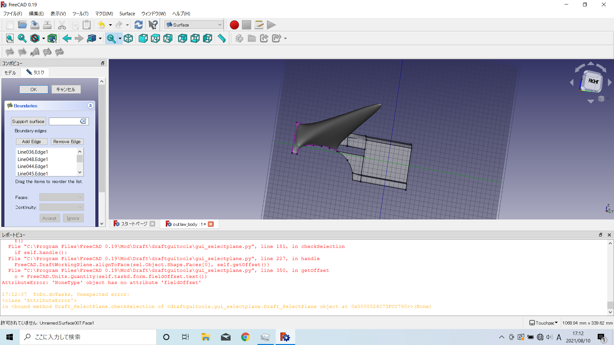
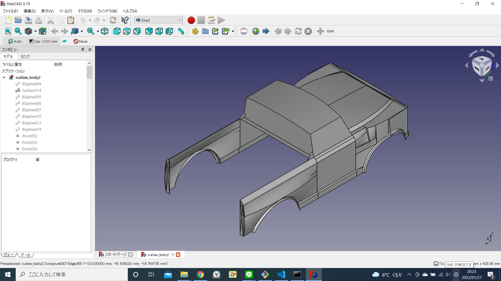

ポリカボディ風の3Dモデルを作ってみた
なぜこれをやろうと思ったのか？
京商のOutlaw rampage Pro を購入したときに、ボディ塗装のデザインに悩んだことがきっかけです。 ラジコンのポリカボディは再塗装が難しい(透明なボディ裏面から塗装を重ねていく)ので、失敗したくないと思い、PC上で塗装結果をイメージ出来たら良いと考えました。
そこで FreeCAD（オープンソースの3DCADソフト）を使って、ラジコンのボディを作ってみることにしました。
FreeCADでボディ形状作成
製作過程
FreeCADのサーフェス機能を使って、モデリングを行いました。サーフェス機能の使い方はこちらの記事が参考になりま した。
製作の流れとしては、
- ボディ側面をFront面（正面）作成
- ボディ側面をFront面からずらす（ボディ横幅の半分）
- ボディ側面をFront面に対してミラーコピー
- 2つのボディ側面の間に、ボンネットや屋根、窓ガラス、グリル、バンパーを作る
- 4で作った部分と側面を結合して完成
という感じで進めました。
 側面を作っている様子☝（面の作成に失敗すると、画像のように変な突起が飛び出すことがありますw）
 完成した側面☝
完成した側面☝
 ミラーコピーした側面☝
ミラーコピーした側面☝
 フロントウィンドウ作成中の様子☝
フロントウィンドウ作成中の様子☝
 おまけ☝（3Dモデルの結合に失敗して、側面が3つ出てきたw）
おまけ☝（3Dモデルの結合に失敗して、側面が3つ出てきたw）
3DCADモデル完成
ポリカボディのように薄い3Dモデルになったので、リアル感が出て良かったと思います。
 ボディ斜め前方から☝
ボディ斜め前方から☝
 ボディ斜め後方から☝
ボディ裏面の様子☝（薄いボディなのがよくわかると思います）
色を塗ってみる
blenderで着色
作成した3DCADデータからstl形式で3Dモデルを出力して、色塗りをしました。 初めはblenderで色をつけてみましたが、初心者の私にとっては操作が難しく、ポリゴンごとに着色するのが限界でした。
 法線ベクトル※ で面の向きを確認出来ます☝（水色のヒゲみたいなのが法線ベクトルです）
法線ベクトル※ で面の向きを確認出来ます☝（水色のヒゲみたいなのが法線ベクトルです）
※法線ベクトル：面から垂直に出る矢印のこと。コンピュータグラフィックス用語。
blenderで着色☝（斜め前方から）
 blenderで着色☝（斜め後方から）
blenderで着色☝（斜め後方から）
ペイント3Dで着色
最終的にペイント3Dを使って塗装イメージを作ることにしました。絵の具で色を塗るような雰囲気で、地道に3Dモデルを塗装していきます（笑）。
色塗りだけでは雰囲気が出ないので、2DCAD（jw_CAD）で作成したテクスチャ（3Dモデル表面に貼る画像）を貼り付けました。
 ペイント3Dで色を塗る☝（はみ出さないようにする感じが筆塗りみたい）
ペイント3Dで色を塗る☝（はみ出さないようにする感じが筆塗りみたい）
 jw_CADで作ったウィンドウのテクスチャ☝
jw_CADで作ったウィンドウのテクスチャ☝
テクスチャを貼り付ける様子☝
完成した3Dモデル
出来上がった塗装イメージは下の画像のような感じです！
塗装イメージ（斜め前方から）☝
 塗装イメージ（斜め後方から）☝
塗装イメージ（斜め後方から）☝
地道な作業が多くて大変だけど楽しかった！